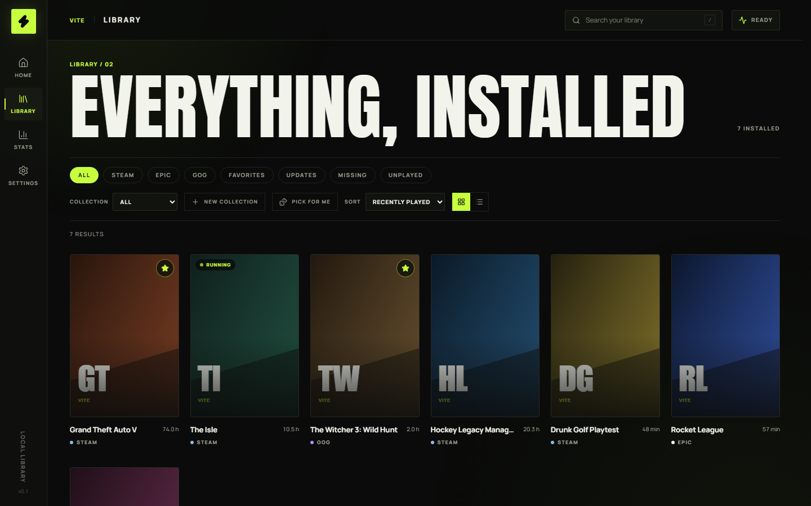
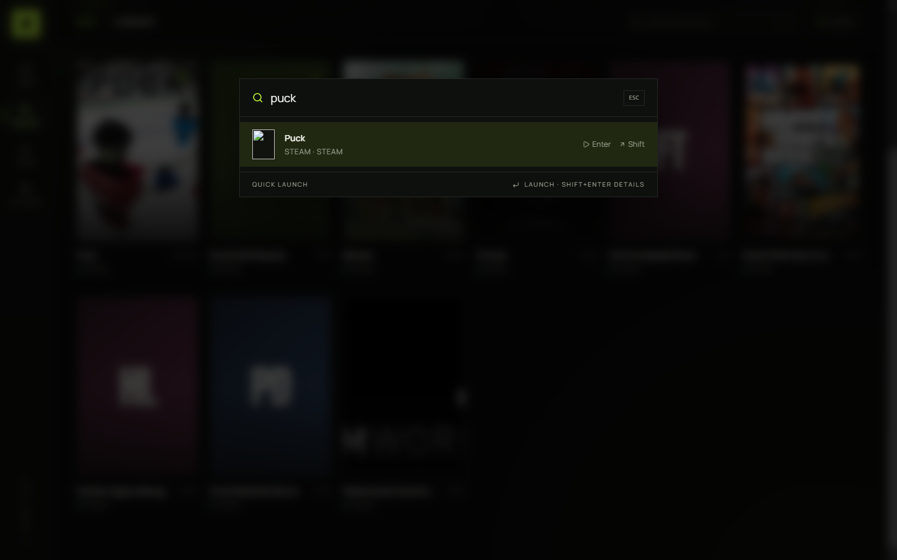
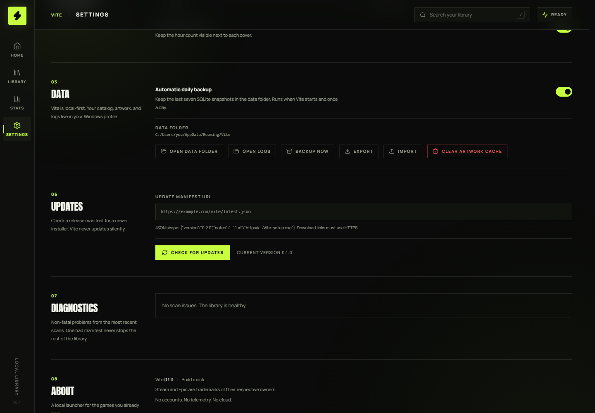

01
Quick-launch palette
Ctrl + Shift + Space opens fuzzy search over everything installed. Enter launches; Shift + Enter opens the game page.
Global hotkeyLocal-first game launcher
Steam, Epic, and GOG in one fast local library. Online friends. No store. No feed.

Vite indexes what Steam, Epic, and GOG already installed, launches through each store’s own protocol, and leaves ownership checks, updates, and achievements alone. Then it disappears into the tray.
Ctrl + Shift + Space opens fuzzy search over everything installed. Enter launches; Shift + Enter opens the game page.
Global hotkeyRecents and running games sit in the system tray with a targeted Stop, so the window can stay closed while the library stays one click away.
Recent + runningCollections, tags, notes, and smart shelves for updates, unplayed games, and store source — plus Pick for me when the backlog wins.
Collections / tags / notesArguments, working directory, environment variables, a pre-launch command, and run-as-admin — while the store’s own launch stays the default.
Args · env · adminUpdate required, missing install, running, or never played — flag the real state of the library and filter straight to it.
Update / missing / runningKeep the last seven daily SQLite snapshots, export the catalog as JSON and import it back, or run entirely from a vite.portable marker.
A manual check against an HTTPS JSON release manifest, which opens the new installer in your browser. No silent background updates.
Manual, by designSkip remote artwork and player history in offline mode; missing images fall back to generated covers and scan errors stay readable.
No network requiredNo store, no payments, no downloads of game content. Vite is a catalog and a launcher for games you already own.
While Discord desktop is running, Vite keeps your status current: “Playing Puck with Vite” with the Vite logo, through Vite’s built-in Discord app. Nothing to configure, and no library data leaves your machine.
Requires Discord desktop running
Four reversible changes for the game you are running: priority, the Windows High Performance plan, paused background work, and optional TCP no-delay that only affects Vite’s own short-lived HTTP sockets.
The same session with Game Boost off and on. With Boost on, Vite pauses its background sampling and asks Windows for high process priority and the High Performance power plan, so frame pacing has less contention to absorb. The numbers below are illustrative, not measured in a game.
Library scans, player sampling, and artwork polling keep running alongside the game.
Vite’s polling is paused, the running game gets high priority, and the High Performance plan is active.
Join right here or in the app. Create a username and password, get a friend code, and add people across devices. Your profile, friend list, and sign-in session live on Vite's account service — no email address required.
DiscoveryFriend codes only — no public profile browsing
Steam player counts, sampled on your machine every five minutes through the official Steam API. No dashboard account — the history stays in your local database.
Charts are drawn from Vite’s own five-minute Steam API samples. Hours and days when Vite was closed stay gaps instead of being filled in. Epic games have no player charts — and Vite never invents them.
No dashboards to learn. A library with real art, a palette you summon over it, and a settings page that shows exactly where your data lives.


One NSIS installer. No account, no key, no storefront. Install it, scan the libraries you already have, and close it when you are done.
SHA-256 D169A6AD0FD624FA117EE98CC8BD895923D1DFDC25ECBD07184643814721E3F1
Windows 10/11 x64 only · Steam, Epic, and GOG only · Online accounts, no telemetry, no cloud library